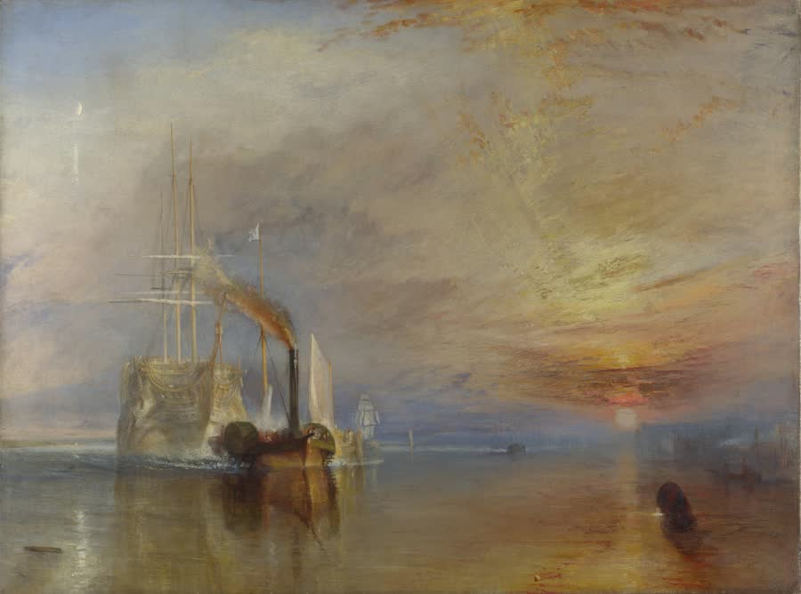

Lord Jim
A Tale · by Joseph Conrad · 1900
A parson’s son trains for a life of adventure at sea.

Contents
Text: Project Gutenberg eBook #5658, public domain. The Author’s Note (1917) is not included in the reader. Sources for the notes · Back to the library · GitHub.